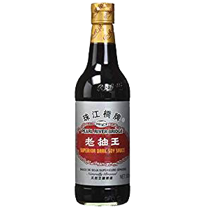

braised aubergine
soft and delicious.
- 2/3 chinese aubs or one big aub (the chinese ones are better)
- light soy

- dark soy 
- chinkiang vinegar

- ginger
- garlic
- shaoxing wine/brown sugar
- starch (corn, potato, w/e)
- a fair bit of veg oil
- cut obe into half-inch cubes. if you’re using chinese ones (long and purple), a nice way to cut them is to rotate as you slice, so each bit looks more like a cone. this potentially exposes more surface area to fry but really it's just satisfying to do.
- fry in oil till the outside browns — don’t put the aubergine in till the oil is hot, and make sure the aubergine is really cooked here, otherwise in the next step you’re just boiling it and there’s no flavour. the cooked aubergine here should look crispy and delicios in its own right. use lots of oil — enough so you have a frying sound.
- mix in a cup: chopped ginger, chopped garlic, brown sugar, shenxiang vinegar, light soy, dark soy (about a tablespoon each of the liquids). you can also use shaoxing wine instead of the sugar.
- pour this liquid onto the aubergines without reducing the heat and stir. Add a bit of water to stop sticking, and cook for another few minutes (till soft). Mix a bit of starch with water and pour it in to thicken the sauce.
- nice served with:
- chopped spring onions
- sesame seeds
- chopped coriander
- poached egg